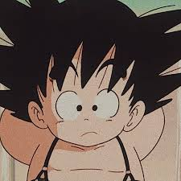

Dragon Ball Z é um anime muito famoso criado por
Akira Toriyama.
A história mostra as aventuras de Goku e seus amigos defendendo a Terra.
Goku: Principal guerreiro da sére.
Vegeta: Rival de Goku e Príncipe Saiyajin.
Gohan: Filho de Goku
SagasSaga Saiyajin, Freeza, Cell e Boo. |
FilmesA Batalha dos Deuses e O Renascimento de F. |
JogosBudokai Tenkaichi, Kakarot e FighterZ. |
O mangá de Dragon Ball é uma das sagas mais extensas e influentes dos quadrinhos japoneses. Com mais de 40 anos de história, a obra criada por Akira Toriyama começou em 1984 e transformou a indústria mundial de mangás, consolidando-se como a principal referência do gênero shonen em todo o planeta.
Link do mangá: https://projetohqonline.blogspot.com/2018/09/baixar-ou-ler-manga-dragon-ball-1984.html